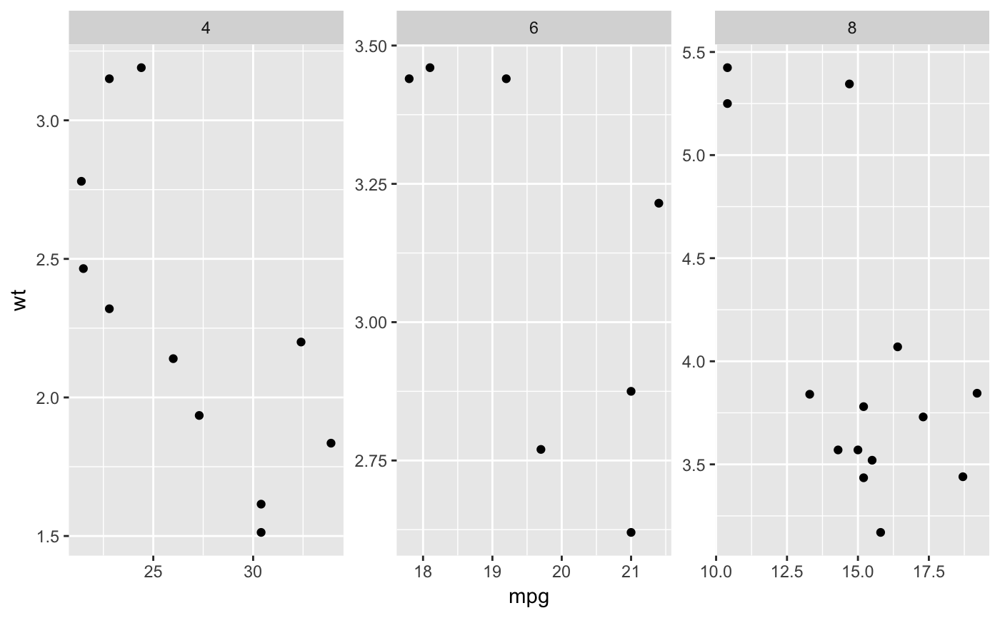
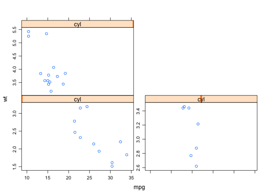
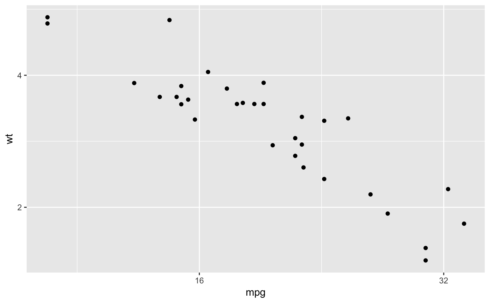
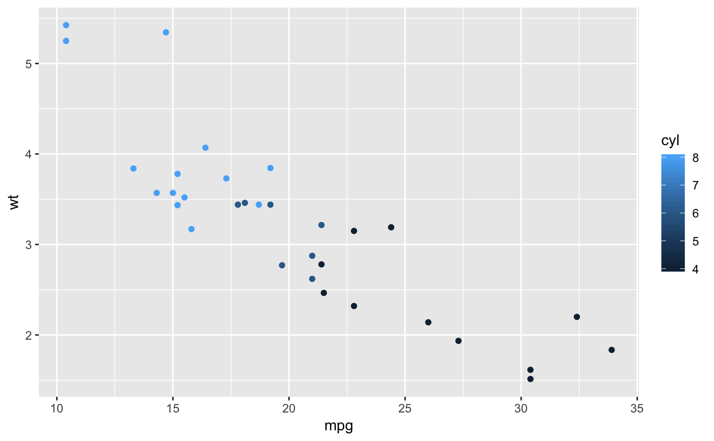
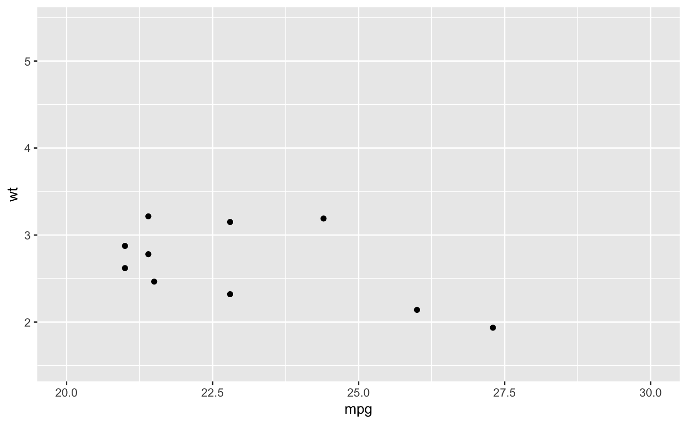
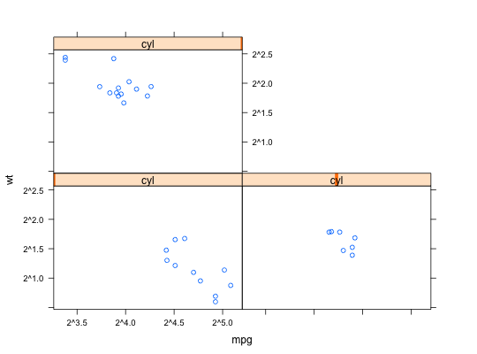
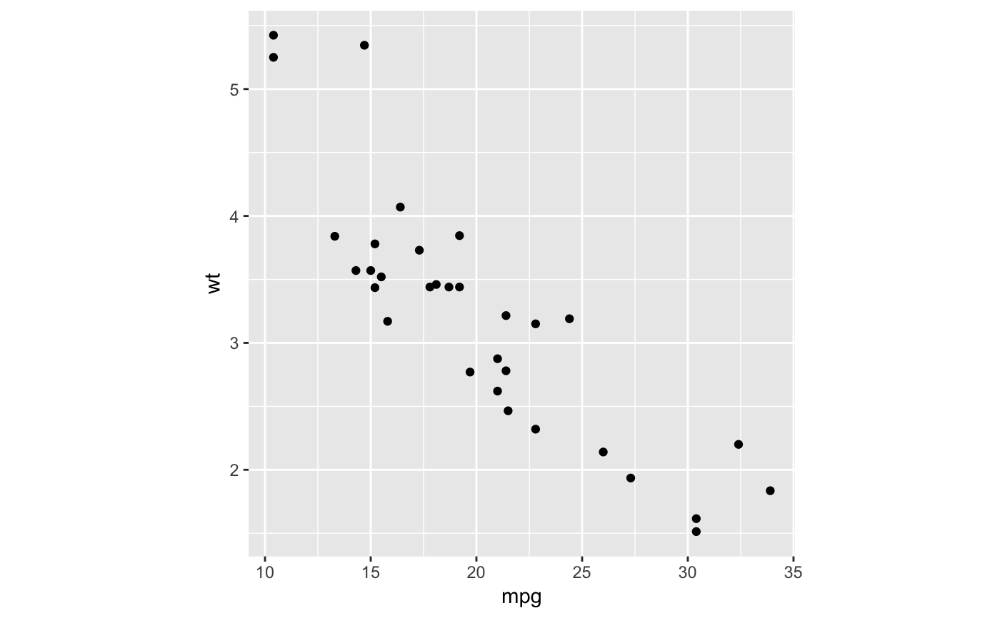
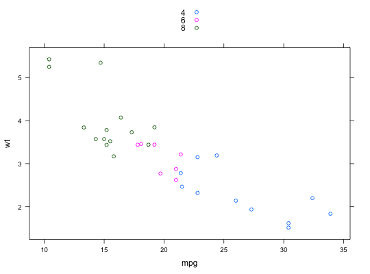

Translating between qplot and lattice
The major difference between lattice and ggplot2 is that lattice uses a formula based interface. ggplot2 does not because the formula does not generalise well to more complicated situations.
Examples
library(lattice) if (require("ggplot2movies")) { xyplot(rating ~ year, data=movies) qplot(year, rating, data=movies) xyplot(rating ~ year | Comedy + Action, data = movies) qplot(year, rating, data = movies, facets = ~ Comedy + Action) # Or maybe qplot(year, rating, data = movies, facets = Comedy ~ Action) # While lattice has many different functions to produce different types of # graphics (which are all basically equivalent to setting the panel argument), # ggplot2 has qplot(). stripplot(~ rating, data = movies, jitter.data = TRUE) qplot(rating, 1, data = movies, geom = "jitter") histogram(~ rating, data = movies) qplot(rating, data = movies, geom = "histogram") bwplot(Comedy ~ rating ,data = movies) qplot(factor(Comedy), rating, data = movies, geom = "boxplot") xyplot(wt ~ mpg, mtcars, type = c("p","smooth")) qplot(mpg, wt, data = mtcars, geom = c("point","smooth")) }#># The capabilities for scale manipulations are similar in both ggplot2 and # lattice, although the syntax is a little different. xyplot(wt ~ mpg | cyl, mtcars, scales = list(y = list(relation = "free")))xyplot(wt ~ mpg | cyl, mtcars, scales = list(log = 10))xyplot(wt ~ mpg | cyl, mtcars, scales = list(log = 2))qplot(mpg, wt, data = mtcars) + scale_x_continuous(trans = scales::log2_trans()) + scale_y_continuous(trans = scales::log2_trans())xyplot(wt ~ mpg, mtcars, group = cyl, auto.key = TRUE)# Map directly to an aesthetic like colour, size, or shape. qplot(mpg, wt, data = mtcars, colour = cyl)xyplot(wt ~ mpg, mtcars, xlim = c(20,30))# Works like lattice, except you can't specify a different limit # for each panel/facet qplot(mpg, wt, data = mtcars, xlim = c(20,30))#> Warning: Removed 22 rows containing missing values (geom_point).# Both lattice and ggplot2 have similar options for controlling labels on the plot. xyplot(wt ~ mpg, mtcars, xlab = "Miles per gallon", ylab = "Weight", main = "Weight-efficiency tradeoff")qplot(mpg, wt, data = mtcars, xlab = "Miles per gallon", ylab = "Weight", main = "Weight-efficiency tradeoff")xyplot(wt ~ mpg, mtcars, aspect = 1)# par.settings() is equivalent to + theme() and trellis.options.set() # and trellis.par.get() to theme_set() and theme_get(). # More complicated lattice formulas are equivalent to rearranging the data # before using ggplot2.